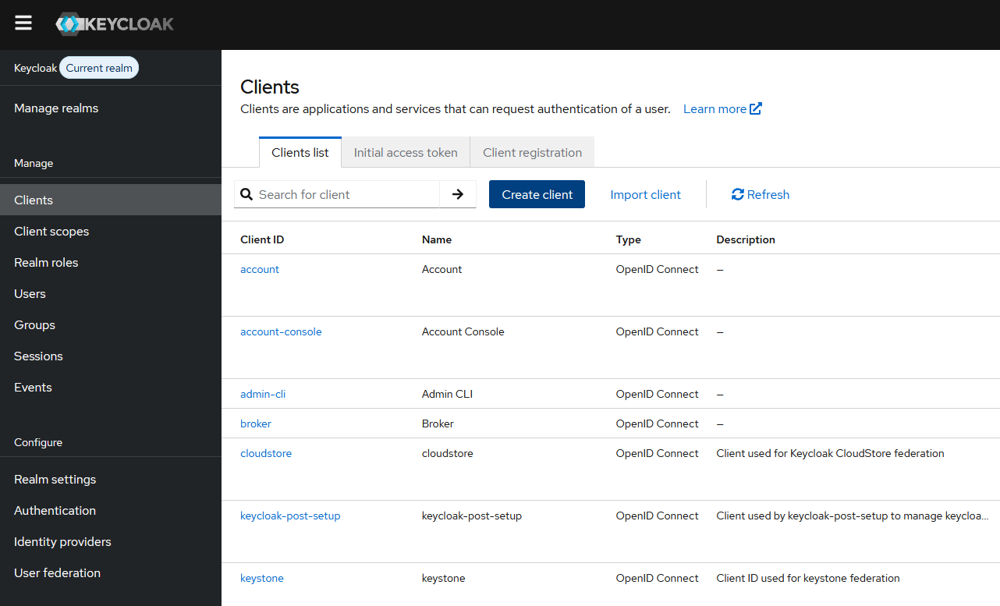
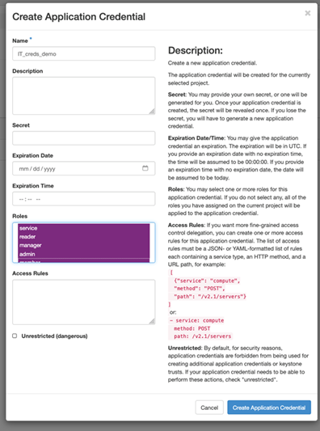

Authentification
Avant de gérer une ressource OpenStack, vous avez besoin d'une connexion authentifiée. Le service d'identité Keystone gère l'authentification et émet des tokens qui autorisent les appels API suivants. Dans ce cours, nous utilisons les application credentials — une alternative plus sûre aux identifiants utilisateur, pouvant être limitée et révoquée indépendamment.
1. Qu'est-ce qu'un Application Credential ?
Les application credentials sont des secrets liés à un projet, créés à partir de votre compte utilisateur OpenStack. Ils permettent aux scripts et à l'automatisation de s'authentifier sans exposer votre nom d'utilisateur et mot de passe principaux. Avantages clés :
- Peuvent être restreints à des rôles et règles d'accès spécifiques
- Révocables à tout moment sans changer votre mot de passe utilisateur
- Idéaux pour les pipelines CI/CD, les environnements de lab et l'automatisation
2. Créer un Client Keycloak pour l'accès API
Dans Keycloak, les Clients représentent les applications et services qui peuvent demander l'authentification d'un utilisateur. Pour permettre à une application externe (script, pipeline CI/CD, microservice) de s'authentifier auprès d'OpenStack via Keycloak, vous devez l'enregistrer en tant que client.
Étape 1 — Ouvrir la section Clients
Connectez-vous à la console d'administration Keycloak, sélectionnez votre realm, puis naviguez vers Clients dans le menu de gauche et cliquez sur Create client.

Étape 2 — Configurer le client
Remplissez les champs suivants :
- Client ID — un identifiant unique pour votre application (ex.
openstack-lab-client). - Client Protocol — sélectionnez
openid-connect. - Root URL — l'URL de base de votre application (optionnel pour les clients en ligne de commande).
Étape 3 — Définir le type d'accès
Dans l'onglet Settings, configurez le type d'accès selon votre cas d'usage :
- Confidential — pour les applications côté serveur capables de stocker un secret de manière sécurisée. Un Client Secret est généré dans l'onglet Credentials.
- Public — pour les applications navigateur ou mobiles qui ne peuvent pas conserver un secret.
Étape 4 — Récupérer les identifiants du client
Pour les clients confidentiels, allez dans l'onglet Credentials pour copier le Client Secret. Utilisez le Client ID et le Secret pour demander des tokens au endpoint de Keycloak :
# Demander un token avec les identifiants client
curl -s -X POST "https://keycloak.example.com/realms/your-realm/protocol/openid-connect/token" \
-H "Content-Type: application/x-www-form-urlencoded" \
-d "grant_type=client_credentials" \
-d "client_id=openstack-lab-client" \
-d "client_secret=YOUR_CLIENT_SECRET" | python3 -m json.tool3. Créer des Keystone Application Credentials (optionnel)
Cette étape est optionnelle. Les Keystone application credentials sont des secrets liés à un projet, gérés directement par le service d'identité OpenStack Keystone. Ils fournissent une méthode d'authentification alternative qui ne passe pas par Keycloak.
Pour créer des Keystone application credentials, authentifiez-vous sur le tableau de bord OpenStack Horizon (ou via le CLI) avec votre compte utilisateur. Puis naviguez vers Identity → Application Credentials et cliquez sur Create Application Credential.
Remplissez les champs suivants :
- Name — un nom descriptif pour ce credential (ex.
lab-credential). - Description — optionnel, aide à identifier l'usage.
- Expiration Date — optionnel, définissez une date d'expiration pour plus de sécurité.
- Roles — laissez vide pour hériter de tous les rôles de l'utilisateur, ou sélectionnez des rôles spécifiques.
Après la création, l'ID et le Secret sont affichés une seule fois. Copiez-les immédiatement — le secret ne pourra pas être récupéré ultérieurement.
Vous pouvez aussi créer des Keystone application credentials via le CLI :
# Créer un Keystone application credential
openstack application credential create my-lab-credential
# La sortie contient l'ID et le Secret — conservez-les en lieu sûr
4. Variables d'environnement
Exportez vos valeurs d'application credential pour que le framework de lab puisse s'authentifier automatiquement.
export OS_AUTH_URL="https://auth.cloud.ovh.net/v3"
export OS_AUTH_TYPE="v3applicationcredential"
export OS_APPLICATION_CREDENTIAL_ID="${OS_APPLICATION_CREDENTIAL_ID}"
export OS_APPLICATION_CREDENTIAL_SECRET="${OS_APPLICATION_CREDENTIAL_SECRET}"
export OS_REGION_NAME="GRA7"5. Exercice 1 — S'authentifier avec un Application Credential
Utilisez le CLI openstack pour vous authentifier auprès de Keystone
avec votre application credential et obtenir un token.
# Demander un token avec les application credentials
openstack token issue
# La commande affiche un ID de token et une date d'expiration
# Le CLI utilise automatiquement les variables d'environnement OS_*6. Exercice 2 — Gestion des tokens
Apprenez à valider et révoquer les tokens d'authentification. C'est essentiel pour comprendre le cycle de vie des tokens dans l'automatisation.
# Émettre un token et capturer son ID
TOKEN=$(openstack token issue -f value -c id)
echo "Token obtenu : $TOKEN"
# Révoquer un token dont vous n'avez plus besoin
openstack token revoke "$TOKEN"
echo "Token révoqué avec succès"7. Gestion des erreurs
Les échecs d'authentification sont signalés avec des messages d'erreur clairs par le CLI. Si vos identifiants sont incorrects, le CLI retournera une erreur.
# Exemple : une tentative d'authentification avec de mauvais identifiants
# produira une erreur comme :
# The request you have made requires authentication. (HTTP 401)
# Vérifiez toujours que vos variables d'environnement sont correctes
env | grep OS_Résumé
- Utilisez les application credentials plutôt que les identifiants utilisateur pour une automatisation plus sûre.
- Définissez
OS_AUTH_TYPE=v3applicationcredentialavec votre ID et secret de credential. - Utilisez
openstack token issuepour obtenir un token etopenstack token revokepour le révoquer. - Le CLI lit automatiquement les variables d'environnement
OS_*pour l'authentification. - Les erreurs d'authentification sont signalées clairement par le CLI.